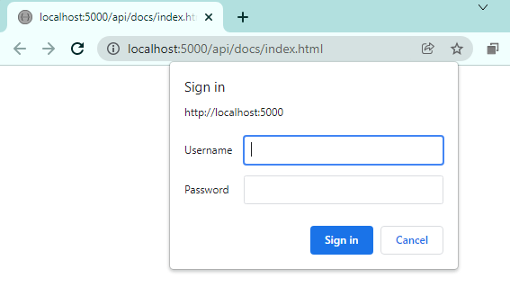
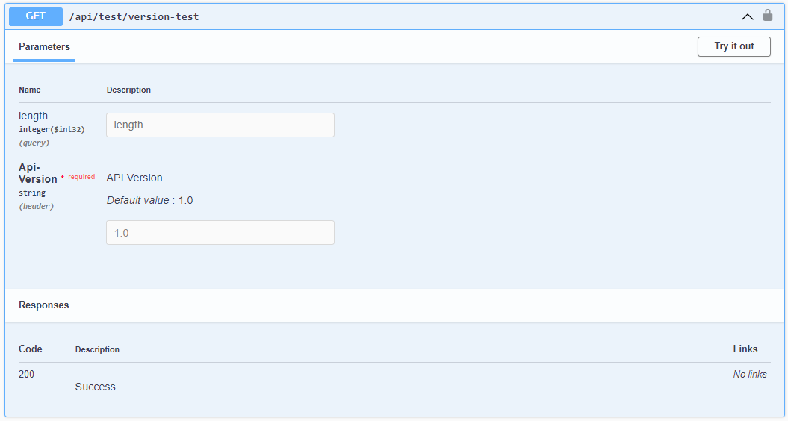
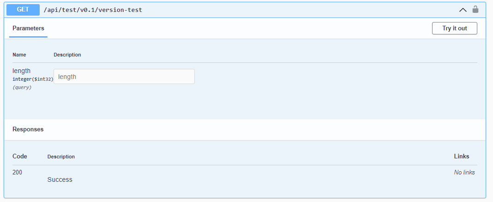

API Versioning and Basic UI Authentication with OpenAPI (Swagger Swashbuckle) in .NET Core 6
Introduction
This post aims to detail how to implement an OpenAPI (Swagger) configuration in a .NET Core 6 web app that includes two API versioning strategy options (URL / HTTP header) along with Basic authentication for access to the Swagger UI. This set up includes configuration to ensure that versioning parameters are forwarded from the Swagger UI in requests to the API.
Full code for this post can be found on GitHub:
https://github.com/garethrbrown/openapi-swagger-api-versioning-demo
What we're setting up here
- An OpenAPI / Swagger configuration in
Program.cs - API versioning with an option for switching between URL and HTTP header versioning strategies
- Implementations of IOperationFilter and IDocumentFilter to manipulate the parameter options and values passed in requests to API from the Swagger UI
- Bearer token configuration for OAuth protection of API endpoints (note that OAuth is not fully implemented for this example, only the Swagger configuration)
- Basic authentication for the Swagger UI
How it looks
Basic authentication for the Swagger UI

Version in header in Swagger UI

Version in path in Swagger UI

Configuration
The bulk of the configuration is included in Program.cs (prior to .NET 6 it would have been in Startup.cs).
A custom enumeration is implemented below to allow us to switch between API versioning strategies (in practice you may decide to retain only code in conditional branches relating to the strategy you decide on). Switch between VersionStrategy.Path and VersionStrategy.Header to try the two strategies.
var versionStrategy = VersionStrategy.Path; // VersionStrategy.Header
Header versioning causes the API to route to different controller actions based on the Api-Version header value e.g.
Api-Version: 1.0
URL versioning causes the API to route to different controller actions based the version included in the path e.g.
https://somedomain.com/api/v1.0/endpoint
Both strategies have advantages and disadvantages. For example, URL versioning means that a client cannot negate to include a version parameter (in the headers) for example, leaving them susceptible to breaking changes when the default API version progresses.
Header versioning allows the client to ignore versioning all together providing the endpoint is not removed from the API specification.
Other strategies available include media type and query string versioning (not included in this post).
IOperationFilter and IDocumentFilter implementations are included and added to configuration to push the UI docs version number into the parameters displayed and cause them to be included with requests to the API
Program.cs
using OpenApiVersionDemo.Common;
using OpenApiVersionDemo.WebApi;
using OpenApiVersionDemo.WebApi.Middleware;
using Microsoft.AspNetCore.Mvc;
using Microsoft.AspNetCore.Mvc.Versioning;
using Microsoft.OpenApi.Models;
using System.Reflection;
using OpenApiVersionDemo.Services;
using OpenApiVersionDemo.Services.Interfaces;
var versionStrategy = VersionStrategy.Path;
var builder = WebApplication.CreateBuilder(args);
// Use intermediate builder to obtain configuration etc
var intermediateBuilder = WebApplication.CreateBuilder(args);
var intermediateApp = intermediateBuilder.Build();
// Add services to the container.
var webHostEnvironment = intermediateApp.Services.GetRequiredService<IWebHostEnvironment>();
var nLogLogger = new NLogLogger(webHostEnvironment.EnvironmentName);
builder.Services.AddSingleton<ILogger>(nLogLogger);
builder.Services.AddTransient<ITestService, TestService>();
builder.Services.AddTransient<SwaggerAuthenticationMiddleware>();
builder.Services.AddControllers();
builder.Services.AddVersionedApiExplorer(o =>
{
o.GroupNameFormat = "'v'VVV";
// Value applies if using URL segment versioning
o.SubstituteApiVersionInUrl = true;
// ApiVersionParameterSource prevents the version
// parameters from showing up in swagger UI, and is also required specifically where
// VersionStrategy.Header is used
if (versionStrategy == VersionStrategy.Path)
{
o.ApiVersionParameterSource = new UrlSegmentApiVersionReader();
}
else if (versionStrategy == VersionStrategy.Header)
{
o.ApiVersionParameterSource = new HeaderApiVersionReader();
}
else
{
throw new InvalidOperationException($"Unhandled value for {nameof(versionStrategy)}");
}
});
var configuration = new ConfigurationBuilder()
.AddJsonFile($"appsettings.{webHostEnvironment.EnvironmentName}.json", optional: false, reloadOnChange: false)
.Build();
string apiVersionDisplayName = configuration["App:DisplayName"];
IList<ApiVersionDescriptor> apiVersionDescriptors = new List<ApiVersionDescriptor>()
{
new (apiVersionDisplayName, "v1.0", deprecated: false),
new (apiVersionDisplayName, "v0.1", deprecated: true)
};
builder.Services.AddApiVersioning(o =>
{
o.DefaultApiVersion = new ApiVersion(1, 0);
o.AssumeDefaultVersionWhenUnspecified = true;
o.ReportApiVersions = true;
// Header, media type and query string API versioning supported
// So use any of the following to specify API version:
//
// url-segment: /v1.0/path
// header: Api-Version: 1.0
// media-type: Accept: application/json;v=1.0
// querystring: ?api-version=0.1
// Set ApiVersionReader. Multiple options can be combined with ApiVersionReader.Combine
if (versionStrategy == VersionStrategy.Path)
{
o.ApiVersionReader = new UrlSegmentApiVersionReader();
}
else if (versionStrategy == VersionStrategy.Header)
{
o.ApiVersionReader = new HeaderApiVersionReader("Api-Version");
}
else
{
throw new InvalidOperationException($"Unhandled value for {nameof(versionStrategy)}");
}
});
builder.Services.AddEndpointsApiExplorer();
builder.Services.AddSwaggerGen(options =>
{
options.CustomSchemaIds(x => x.FullName);
foreach (var apiVersionDescriptor in apiVersionDescriptors)
{
options.SwaggerDoc(apiVersionDescriptor.VersionShort, new OpenApiInfo { Title = apiVersionDescriptor.VersionFull, Version = apiVersionDescriptor.VersionShort });
}
// Enabling bearer token auth in Swagger UI
options.AddSecurityDefinition("Bearer", new OpenApiSecurityScheme
{
Description = "JWT Authorization header using the Bearer scheme (Use value 'Bearer [accessToken]')",
Name = "Authorization",
In = ParameterLocation.Header,
Type = SecuritySchemeType.ApiKey,
Scheme = "bearer"
});
options.MapType<FileResult>(() => new OpenApiSchema() { Type = "file" });
options.AddSecurityRequirement(new OpenApiSecurityRequirement
{
{
new OpenApiSecurityScheme
{
Reference = new OpenApiReference
{
Type = ReferenceType.SecurityScheme,
Id = "Bearer"
}
}, new List<string>()
}
});
options.DocInclusionPredicate((docName, apiDesc) =>
{
var actionApiVersionModel = apiDesc.ActionDescriptor?.GetApiVersion();
// Unversioned actions should be included everywhere
if (actionApiVersionModel == null)
{
return true;
}
if (actionApiVersionModel.DeclaredApiVersions.Any())
{
return actionApiVersionModel.DeclaredApiVersions.Any(v => $"v{v.ToString()}" == docName);
}
return actionApiVersionModel.ImplementedApiVersions.Any(v => $"v{v.ToString()}" == docName);
});
if (versionStrategy == VersionStrategy.Path)
{
// Use these filters for path versioning (version)
options.OperationFilter<RemoveVersionParameterFilter>();
options.DocumentFilter<ReplaceVersionWithExactValueInPathFilter>();
}
else if (versionStrategy == VersionStrategy.Header)
{
// Use this filter for header versioning (Api-Version)
options.OperationFilter<SwaggerAddHeaderParameterOperationFilter>();
}
else
{
throw new InvalidOperationException($"Unhandled value for {nameof(versionStrategy)}");
}
var xmlFile = $"{Assembly.GetExecutingAssembly().GetName().Name}.xml";
var xmlPath = Path.Combine(AppContext.BaseDirectory, xmlFile);
// Requires <GenerateDocumentationFile>true</GenerateDocumentationFile> in .csproj file for XML document generation
options.IncludeXmlComments(xmlPath);
options.ResolveConflictingActions(apiDescriptions => apiDescriptions.First());
});
// Configure logging used by ASP.NET Core. Set minimum log levels in JSON app configuration
builder.Logging.ClearProviders();
builder.Logging.AddProvider(new NLogLoggerProvider(webHostEnvironment.EnvironmentName));
var app = builder.Build();
// Configure the HTTP request pipeline.
app.UseMiddleware<SwaggerAuthenticationMiddleware>();
// Enable middleware to serve generated Swagger as a JSON endpoint.
app.UseSwagger(c =>
{
c.RouteTemplate = "api/docs/swagger/{documentName}/swagger.json";
});
// Enable middleware to serve swagger-ui (HTML, JS, CSS, etc.),
// specifying the Swagger JSON endpoint.
// NOTE: Missing HTTP verb attributes on controller actions will cause "Fetch error" (HTTP 500) when loading Swagger UI
app.UseSwaggerUI(c =>
{
foreach (var apiVersionDescriptor in apiVersionDescriptors)
{
c.SwaggerEndpoint($"swagger/{apiVersionDescriptor.VersionShort}/swagger.json", apiVersionDescriptor.VersionFull);
}
c.RoutePrefix = "api/docs";
});
app.UseAuthorization();
app.MapControllers();
app.MapControllerRoute("default", "{controller=Home}/{action=Index}/{id?}");
app.Run();
Swagger UI Basic Authentication
Basic authentication can be included to protect the Swagger UI from being browsed by unauthorised party. This is a simple and secure mechanism for protecting the Swagger UI providing that the username and password is sent over HTTPS.
This is of course optional. Note that this does not protect the API its self, only the Swagger UI. This middleware excludes requests from non localhost clients.
SwaggerAuthenticationMiddleware.cs
using System.Net;
using System.Text;
namespace ThisApp.WebApi.Middleware;
public class SwaggerAuthenticationMiddleware : IMiddleware
{
private readonly string _userName;
private readonly string _password;
public SwaggerAuthenticationMiddleware(IConfiguration configuration)
{
_userName = configuration.GetValue<string>("App:Swagger:BasicUiAuth:Username");
_password = configuration.GetValue<string>("App:Swagger:BasicUiAuth:Password");
}
public async Task InvokeAsync(HttpContext context, RequestDelegate next)
{
//If we hit the swagger locally (in development) then skip basic auth
if (context.Request.Path.StartsWithSegments("/api/docs") && !IsLocalRequest(context))
{
string authHeader = context.Request.Headers["Authorization"];
if (authHeader != null && authHeader.StartsWith("Basic "))
{
int splitAuthHeaderParts = 2;
string[] splitAuthHeader = authHeader.Split(' ', splitAuthHeaderParts, StringSplitOptions.RemoveEmptyEntries);
if (splitAuthHeader.Length != splitAuthHeaderParts)
{
throw new InvalidOperationException($"{splitAuthHeader} length should be {splitAuthHeaderParts}");
}
// Get the encoded username and password
var encodedUsernamePassword = splitAuthHeader[1].Trim();
// Decode from Base64 to string
var decodedUsernamePassword = Encoding.UTF8.GetString(Convert.FromBase64String(encodedUsernamePassword));
string[] splitDecodedUsernamePassword = decodedUsernamePassword.Split(':', 2);
// Split username and password
var username = splitDecodedUsernamePassword[0];
var password = splitDecodedUsernamePassword[1];
// Check if login is correct
if (IsAuthorized(username, password))
{
await next.Invoke(context);
return;
}
}
// Return authentication type (causes browser to show login dialog)
context.Response.Headers["WWW-Authenticate"] = "Basic";
// Return unauthorized
context.Response.StatusCode = (int)HttpStatusCode.Unauthorized;
}
else
{
await next.Invoke(context);
}
}
private bool IsAuthorized(string username, string password) => _userName == username && _password == password;
private bool IsLocalRequest(HttpContext context)
{
if (context.Request.Host.Value.StartsWith("localhost:"))
{
return true;
}
// Handle running using the Microsoft.AspNetCore.TestHost and the site being run entirely locally in memory without an actual TCP/IP connection
if (context.Connection.RemoteIpAddress == null && context.Connection.LocalIpAddress == null)
{
return true;
}
if (context.Connection.RemoteIpAddress != null && context.Connection.RemoteIpAddress.Equals(context.Connection.LocalIpAddress))
{
return true;
}
return context.Connection.RemoteIpAddress != null && IPAddress.IsLoopback(context.Connection.RemoteIpAddress);
}
}
IDocumentFilter and IOperationFilter
Implementations of these interfaces can be used to modify the Swagger UI documentation and the requests that it sends to the API.
Here's what each of them do:
SwaggerAddHeaderParameterOperationFilter.cs
This implementation of IOperationFilter adds an API Version header into requests from the Swagger UI to the API, defaulting to the version of the API selected. This can be overridden in the action parameters.
public class SwaggerAddHeaderParameterOperationFilter : IOperationFilter
{
public void Apply(OpenApiOperation operation, OperationFilterContext context)
{
operation.Parameters.Add(new OpenApiParameter
{
Name = "Api-Version",
In = ParameterLocation.Header,
Description = "API Version",
Required = true,
Schema = new OpenApiSchema
{
Type = "string",
Default = new OpenApiString(context.DocumentName.Replace("v", string.Empty))
}
});
}
}
ReplaceVersionWithExactValueInPathFilter.cs
This IDocumentFilter implementation takes the selected API version and adds it into the path in the Swagger UI, so there is no longer a need to input a path version parameter value manually.
public class ReplaceVersionWithExactValueInPathFilter : IDocumentFilter
{
public void Apply(OpenApiDocument swaggerDoc, DocumentFilterContext context)
{
var paths = new OpenApiPaths();
foreach (var path in swaggerDoc.Paths)
{
paths.Add(path.Key.Replace("v{version}", swaggerDoc.Info.Version), path.Value);
}
swaggerDoc.Paths = paths;
}
}
RemoveVersionParameterFilter.cs
This IOperationFilter implementation removes the version parameter from the inputs collection in the UI action.
public class RemoveVersionParameterFilter : IOperationFilter
{
public void Apply(OpenApiOperation operation, OperationFilterContext context)
{
var versionParameter = operation.Parameters.SingleOrDefault(p => p.Name == "version");
if (versionParameter != null)
{
operation.Parameters.Remove(versionParameter);
}
}
}
Summary
Using the above configuration, you have a versioned API in .NET Core 6 with a Swagger user interface which will forward selected API version information to the API. In addtion, the UI requires basic authentication to browse for non localhost clients.